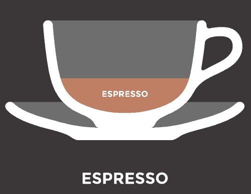

Espresso is a single shot of coffee from an espresso machine.
Making “good” espresso is an art form, and needs much research
and practice to develop the best results. This is only a very
basic starting place.

Ingredients:
Fresh Ground Espresso Beans (1/4 oz per shot)
Purified Water
Methods:
Grind the coffee beans. Don’t grind till like powder as this will make the espresso drink more bitter.
Tamp the grind coffee beans. Don’t temp too hard as the espresso will become more bitter.
Don’t be too loose either as the water will not have enough time to pickup the aroma. Practice makes perfect.
Run the espresso machine and wait for 25-45 seconds and you will get your espresso ready!